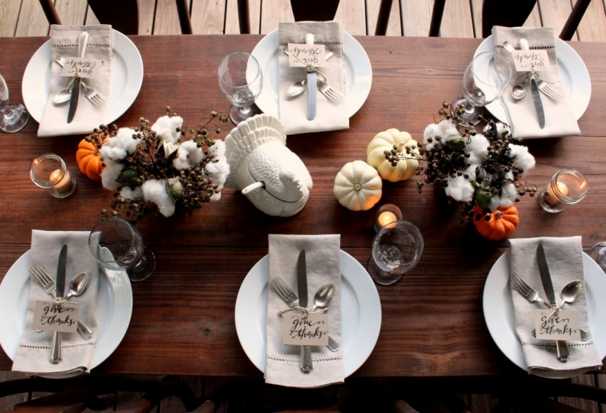

.png)
.PNG)
.PNG)
.PNG)
.PNG)
.PNG)
.JPG)
.JPG)
.PNG)
.PNG)


Cotton…
everywhere.
November is the time for harvesting cotton fields here in the South. This is about as close as we get to a “blanket of white” covering the ground. In all my years growing up in Georgia, I had never touched a plant until a couple of weeks ago. Imagine that.
That was when I got the bright idea to use it in my Thanksgiving decorations around the house. I had said in of my Weekend Wandering posts, October gets all the orange and yellow, but November calls for brown. One of the readers in Karen’s blog, Garden Home and Party, said that she didn’t like decorating for fall because it seemed to be all “dead and brown stuff.” I laughed when I read it, but now that November is here, I think I am guilty of doing that very thing. Dead brown stuff + cotton. See, I used it here on the porch table.
There are branches of cotton and dead brown berries from crape myrtle trees in small arrangments in a couple of pottery mugs. I am a big believer in keeping table arrangements low so that people can see over them. I hand lettered a little piece of khaki cardstock and tied it with twine to the silverware. The turkey is one my husband picked up for me at the Pottery Barn outlet, but Williams Sonoma has it too. 
I like our porch table because it is so rustic and casual, but I decided to do a more fancy place setting at the dining room table. Thanksgiving for us usually involves two BIG meals in one day since both our parents and in-laws live here – within 5 minutes of us. We normally don’t serve it here but instead, take food to both of our parents’ gatherings. Still, I have always wanted to set a fancy schmancy table for the holiday. Here is my attempt at what I call Southern fancy (again dead brown stuff + cotton.)
Yes, that is a tall arrangment, but for this meal, the centerpiece is moved off the table so that the food can take center stage.

When I tied the silver on the porch with twine, it was easy to arrange it all on the plate, but when I used the ribbon on it for the dining room, it was a pain! I finally gave up, tied just the knife and the card with the ribbon, and placed it on top of the fork and spoon. It still looks the same, but it is easier to set and easier for guests to remove it.
After doing the dining room Thanksgiving arrangement, I decided the fireplace in the great room would like one too. So onward went the invasion of brown dead stuff and cotton.
This is my favorite seat in the house when the weather turns cold, and we have a fire in the fireplace. It is hard to move away from it once you are seated there (especially if you are as cold natured as I am.)
Here is a little closer look at the cotton and berries in the pottery pitcher.
And after the cotton invaded the great room, it invaded the master bath and filled the large basket that sits atop the cupboard. It just seemed a very November-ish thing to do. 🙂 I did stop there with it, and I haven’t been able to get decent lighting for a photo of it in there. So no more cotton and dead brown stuff for you to see. I know you are sad.
My porch table is still my favorite of the Thanksgiving decorations. 
So do you decorate for Thanksgiving, or have you already started your Christmas decorating?
(This is what the holly trees surrounding the deck look like now!)
I’d love to hear from you.


.PNG)
Love this post and the inspirations ideas! Thank you.
——————————————————————
Glad you liked it Julia! I hope you found some Thanksgiving ideas that you could use there.
Kelly
Hey..
I have to say I was just simply google searching for cotton..
you know why?
because I never seen cotton growing!
yeah, nice pictures.. and now I know!!
Thanks for the photos..
most informative for me 🙂
I feel like a d.a. but you have freed me from that..
now I can see..
thanks to you
Kind Regards
-sean
(New Zealand)
[…] Why not have cute signage at each place setting? Either with a quote written out or guest name … it’s adorable! Check out more details HERE! […]
[…] via Talk of the House […]
Kelli, we live in Alpharetta, GA. Where did you find that cotton field? Thank you. You are an incredible decorator.
———————————————————————
Hi Lana! The cotton field was down a country road on the west side of Interstate 75 near Byron, Georgia. I’m not sure I could even find it today if I had to! Thank you for your kind words about the decorating here. How sweet!
Kelly
[…] 8. Via Talk of the House […]
[…] Talk of the House […]
[…] Talk of the House […]
Hi Kelly, I love your cotton! I love the sight of those cotton fields on a blue day. We see them on our way to the beach. Your arrangements and tables are sooo pretty. Love your favorite seat, it would be mine too, so cozy. Our tradition is to decorate for Christmas the weekend after Thanksgiving. I’m catching up and also love your Highlands posts. Take care and happy Thanksgiving to you and your precious family! Robin
————————————————————————
Robin – Thank you so much for your sweet comment! We had a wonderful Thanksgiving (twice!) I hope you did too. I am glad you liked all the cotton. I have been working like crazy to get Christmas things up, but I still have the cotton on the mantle right now (haven’t made it to the great room yet.) I hope you got your Christmas decorating done this weekend or at least a start on it.
Kelly
Gosh, I now really like cotton and dead stuff!! Your lettering is beautiful, btw.
———————————————————————-
Thank you Barbara. Too funny! I’m glad you liked the lettering (and the cotton and the dead stuff. :))
Kelly
Your outdoor porch table decor is beautiful. Love the idea to include the cotton branches. I’ve seen crepe myrtle in bloom on a visit to Williamsburg, but I didn’t know it had berries – it’s a nice touch to the arrangement. Tabletop settings are always inspiring to see.
———————————————————————-
Mary or Kathy? – Not sure which one of you is the writer in the sisters. 🙂 Thank you for taking time to read and leave a comment. And thank you for your sweet words about the table arrangements. I love Williamsburg! Made several trips there when I was younger, and even did my senior research project on it in high school. It is a gorgeous place.
Kelly
Kelly, I was so glad to get your sweet comment the other day! Your blog is wonderful and I have to tell you that when i first saw this post I thought I was in trouble! We just recently ” Borrowed” some cotton while driving to and from our beach house and those stalks just make me happy! they make the best arrangements!
————————————————————————-
Carolyn – How funny about “borrowing” the cotton! There is a field of millet growing across the road from us, and I asked my husband today if he thought anyone might cut some of the stalks with the beautiful brown pods. He said, “Now, why would anyone want any of those dead looking brown things?” Well, they would also be great in an arrangement (and no I have not cut any of it….yet.) I did legally obtain my cotton. 🙂 Thank you for visiting here and leaving your comment.
Kelly
Kelly
We have seen cotton used a lot out here on the West Coast. I love how it looks in your brown stoneware on your fireplace…just fabulous! I think it looks great with the new white & green heirloom pumpkins…a great alternative for those who can’t use orange in their homes! Have a wonderful Thanksgiving!!
Cindy
———————————————————————
Cindy – Thank you for your compliments! I cannot find any of those cool heirloom pumpkins around here. I wanted more yellow ones, and even they were difficult to find in our area. By the way, I love love love the dining room you did for the holiday house. Pure gorgeousness.
Kelly
Love the cotton! While driving thru Mississippi a couple of years ago I ended up with some on my car antenae and the front grill….I sure picked it off piece by piece and used it as decoration!!! The fields in harvest season were beautiful! Question. I notice you have alot of checked drapes which I LOVE so home-y and warm. Do you make them yourself or buy them? I like how large the checks are and was wondering. Also love the great room pictures….haven’t seen that room yet! Keep bloggin’………..love it!
——————————————————————–
Jennifer – You were a wise girl to save all that cotton for decorations! I do have lots and lots of checked drapes here. I made the ones in the kitchen and dining room and the ones in the great room. The ones in the playroom and the boys’ room were ordered unlined from Country Curtains, but I lined them with white sheets when they arrived (less expensive then ordering them lined.) The ones in the great room were my biggest challenge. Those drapes are 18 ft. long. I did not line them because I was afraid the weight of that length would be too much for the wooden rod they are on. No, I haven’t shown much of the great room. I am hoping to get the sofa reupholstered, but that probably won’t happen before I start doing the Christmas posts.
Kelly
Did you treat the cotton first? I wondered if they had any little friends hanging around? I love that you used cotton inside! I’ve only used it outside but hmmm now I’m gonna have to try it inside. Cotton and burlap are two of my favorite things and they can even go through Christmas..
————————————————————————-
Shannon – The cotton sat out on the porch for several days, but I did not notice anything coming out of it – not there nor inside. Now we did bring in some acorns…oh my gosh. They had little worm like things that came out of them! Yuck. Then I gave them a bath in bleach and water and baked them a while at a low temperature in the over. No more problems with the acorns now!
Kelly
Susie,
I cut branches from my crepe myrtle each year. I love it when the leaves turn yellow and red. Mine last weeks in a vase of water. I usually add asparagus ferns, ivy, and branches from my abelia shrub.
I have pics if you would like!
Kelly,
I am SO happy that you stopped by my blog today, leading me to yours! What a treat to see your fabulous table setting. As you now know….I love to set the table, too! 🙂
I grew up in Dallas, TX…home of the Cotton Bowl, so I totally appreciate your use of the dead brown stuff + cotton!
Your calligraphy is excellent….just love those tags of Give Thanks!
Have a wonderful week and even better Thanksgiving!
xoxo Elizabeth
————————————————————————–
Elizabeth – Thank you for visiting here and leaving your kind comments! If you are from Dallas you surely love cotton. I think table settings are so much fun because they allow us to be creative, and I am glad you liked the little hand lettered tags.
Kelly
Kelly, your cotton brought me back to a trip our family took this time last year. We drove to Florida from Michigan to spend Thanksgiving with family and I remember seeing all the cotton! I wanted to stop and pick some. It really is pretty as a decoration around your home. I have to add that my eye caught your cute taupe and white check curtains! I also noticed some red and white check curtains in a room to the right of the fire place! Love them!
———————————————————————-
Patty – What a loooooong drive you made! You would have seen lots of the cotton at that time of year. How observant of you to notice the curtains. I am totally addicted to checks. They make it super easy to cut a straight line when cutting out the fabric to sew! Glad you liked them.
Kelly
Hi Kelly,
Love all of your Thanksgiving decorations – I have been eyeing the crape myrtle bush by our deck for a few weeks, thinking the seed pods should be worth SOMETHING! Any idea how long they will stay “together”, as in, the pods don’t fall off? I’d like to somehow work them into my Christmas decor since we are going to be an empty nest for Thanksgiving this year.
————————————————————————
Susie – I don’t have mine in water. They are just stuck in the containers with the cotton, and the berries have not fallen off. Now when I was arranging them, some did as I moved them, but once they have been “left alone” they have been fine. I think they could last indefinitely. Here is a crazy idea though…what if you sprayed them with hairspray? They are dead already 🙂 so it couldn’t hurt them. Just an idea…
Kelly
I love the cotton, Kelly! We don’t have any cotton fields around us, but my sister and her husband are surrounded by them. When we were visiting there a few weeks ago, I thought what a beautiful display the cotton would make in your home for Thanksgiving! I wish I had some near me to use! I was so happy to see your post on this – beautiful job!
————————————————————————–
Lindsay – Thank you for your always sweet words. You should get your sister to get you some of the cotton! You could use it in Christmas arrangements too.
Kelly
Kelly,
LOL! Thank you for the shout out, the person that said they didn’t like the brown, dead stuff was one of my readers. I don’t mind the brown, dead stuff, truly. I absolutely love your use of the cotton and the berries. It’s the best of fall with the white cotton a nod to the anticipated cold of winter just around the corner.
Your table looks fabulous and I love the way you tied the silver. Is the writing on the khaki paper your writing or a stamp? Its so pretty.
I also love the mantle and can see why that great chair would be a favorite spot in the home during this time of year.
xo,
Karen
————————————————————————
Karen – Thank you for all the compliments! The writing is my lettering. I don’t know why it looks so brown in the photo when I did it with black ink…hmmm. I hope we have a fire in that fireplace tonight since it has finally turned cold(ish) here – first real frost of the year was this morning.
Kelly
Your table scape is elegant. Living in Georgia makes it so fitting to use cotton and what a great idea, especially since this is the time of year it is harvested. How nice to be able to use what is native to your area.
With having a November birthday in our family, we have a rule — “no Christmas anything until after the 7th!” It’s hard some years but I don’t like to rush the seasons and Christmas music is already playing on one of our radio stations 24/7 for the last two weeks already!
————————————————————————
Genny – I totally understand the “Christmas rule.” Years ago, it seemed like there was a little breathing room between Thanksgiving and Christmas, but not anymore. I don’t think there is even any breathing room after Halloween! Yes, the Christmas music has been on the radio here already – and that used to wait until after Thanksgiving too. (I do listen to it year round on Pandora…so guilty!)
Kelly
@Cath – it really is quite beautiful growing in the fields. Even before it makes the cotton, the green plants with the pink & white blossoms are lovely!
Hi Kelly,
Oh yes, dead brown stuff and cotton… brilliant! Love it! As usual, you find the beauty around you and incorporate it in your home. I have never seen cotton growing in fields in person. Only in photos and movies. It must be incredible. I think I would have tried to spin it if I lived there (I learned how to spin wool when I lived in New Zealand and then learned how to weave it and made all sorts of things like placemats from my lumpy wool spinnings!).
We have a cottage at a lake in northern Alberta and over the years when I was there with my son and nieces and nephews I’d take whoever wanted to go on a “Wildflower Walk” to make bouquets to decorate the cottage. It didn’t matter what time of the year and so in autumn the “Wildflower Walks” usually turned into ‘Dead Brown Weed Walks’. Amazingly the resulting bouquets from the dead brown weeds were often some of our favourites!
Thank you for sharing your beautiful home and decorating ideas. Right now I am still in the autumn phase even though we have almost a foot of snow covering everything. Talk about fields of white! I am thinking that I will start my Christmas decorating this weekend or maybe next since we have a dog show to go to this weekend. Of course our Canadian Thanksgiving is long over… and now that Remembrance Day is past I think it’s time to drag out those boxes and get going on Christmas. Apologies to those who can’t stand the idea of starting Christmas so early… that’s just me!
Thanks again for a great post!
Cath
—————————————————————————
Cath – I’m glad I am not the only crazy person out here using the dead brown stuff. (I was actually a little afraid to post the photos, but thought, “Oh well, what the heck.”) That is so cool that you know how to spin and weave! Wow to your foot of snow. I am VERY jealous. You better believe I would be doing Christmas decorating if there was snow outside (and I would be doing the outside and taking photos for the blog! Ha ha.)
Kelly
Hi Kelly, Wow, I love the look of the cotton. I live in Georgia, maybe I need to go to the country and find some 🙂 Your home is beautiful. I have a chair and ottoman very similar to yours and it’s comfortable too. Happy Thanksgiving!
———————————————————————–
Anne – Thank you for your sweet comment. You can’t beat a chair and ottoman for comfort (especially if it is by the fireplace!) Yes, you need to find you some cotton before it is all harvested! Most of the fields around here have been cut and are already being plowed in for the next crop.
Kelly
Beautiful post….. My Mom who is now 88 years old.. 🙂 .. was raised on a farm in south Georgia…. and has told many stories about “Cotton” picking time !! 🙂 …. of course,back then it was all done by hand!! Can you imagine??!! What a great post!! Love the dining room and WOW… I would cozy up in that chair too!!!!!Happy Thanksgiving to you and your family!!!! Terri
———————————————————————-
Terri – I cannot possibly imagine picking all of this cotton by hand. It is a tremendous amount! Thank you for you kind words about the dining room. Yes, that chair IS quite cozy. We could use a fire here this morning as cold as it has been here today. Happy Thanksgiving to you and your family too.
Kelly
I do not decorate for Christmas until the Friday after Thanksgiving. I have my children here for dinner on Thanksgiving so I like a Fall Table for that meal. And I LOVE your idea of incorporating cotton!! There is nothing like a pretty field of cotton…it is not grown up here as much as it used to be and I miss seeing those pretty fields in the fall.
———————————————————————-
Arlene – I don’t normally do my Christmas decorating until after Thanksgiving either, but with the blog added to my plate this year, and a week off next week, I may just have to break that tradition and get started in order to be ready for a party here in December. I agree with you that Thanksgiving deserves its fall décor. I am glad you liked all the cotton!
Kelly
Yes, November is the time for cotton! We live in Bostwick, GA (just outside of Madison) and are surrounded by cotton fields. Cotton plants decorate my front porch posts right along with corntalks. Cotton harvest is a pretty big deal here – there is actually still an operating gin in “town” (population 400) – complete with its own festival every year on the 1st weekend in November.
———————————————————————–
Chrisi – You must live in a beautiful area! I was just telling Sarah from HousecrazySarah about Madison the other day. I would bet a cotton festival would have a lot of really pretty floral arrangements with cotton.
Kelly
Kelly,
What a great use for cotton! I have never actually touched a boll, but growing up my mother shared stories about picking cotton in Louisiana as a young girl.
You always have a way of taking the simple and obvious and turning into something beautiful!
Question though…. I am in love with the turkey tureen on the table. Was that a local purchase or maybe in a chain store? I was in Target today and spent some time looking, but everything is Christmas! Speaking of Christmas…. My husband’s birthday is 2 weeks before Christmas, so we have always made a family tradition of putting up the tree and decorating on his birthday. If I had my way though, I wouldn’t do it until Christmas Eve! I am one of those fanatics who hate the commercialization of Christmas!
———————————————————————–
Wanda – The cotton on the plant feels just like the cotton balls from the drugstore. I was so surprised. I thought they had to do something to it to make it that soft. The turkey tureen was at the Pottery Barn outlet, but I just saw it this weekend at a Williams Sonoma (regular store – not outlet) in Atlanta. They also had the matching salt and pepper shakers and the small taper holders (http://www.williams-sonoma.com/products/turkey-tiny-taper-holders/?pkey=e%7Cturkey%7C30%7Cbest%7C0%7C1%7C24%7C%7C17&cm_src=PRODUCTSEARCH||NoFacet-_-NoFacet-_-Feature_Recipe_Rule-_- ) I should have bought the salt and pepper shakers but didn’t. You are right – Target is all Christmas now. How neat to do the tree with your husband’s birthday. What a great tradition!
Kelly
Kelly-We just got home from Florida, and I loved seeing the cotton along the way. That was a first for us. I wanted to stop and pick some to bring home, but I thought that would be stealing. Darn it. I wish I had now! BTW-I love your wicker chairs in your dining area. Would you share where they came from?
————————————————————————-
Susan – I bet there are a lot of people who do stop and pick it. You’re right, that would be stealing a farmer’s crop. When my daughter saw it all here, she very quickly asked, “Mom, did you STEAL that?” I did not. My father in law knows a farmer who graciously let us have some. After it is harvested, there is still quite a bit in the field, and I would think it would be fine to pick up the loose little pieces. As far as the chairs go, they are from Ballard Designs, but I got them at the Ballard Outlet in Atlanta – for a major bargain price. When they have a holiday sale, it is really good. I have repainted them several times. Glad you liked them!
Kelly
Yep, I would agree that I decorate with dead things in November. We don’t have any pretty cotton balls to decorate with – love them.
————————————————————————
Grace – Mother Nature can give us some pretty neat things – even when they are dead, can’t she? Or maybe it is that we are all so gifted in seeing the beauty in the everyday. You need to find you some cotton to add to your dead things. 🙂 And by the way, I am so jealous you got to meet the Young House Love folks!!
Kelly
I love how you used the cotton sprigs in your arrangements. I’m a northern girl but we had a place in FL and one time traveling there by car in the fall I saw my first field of cotton! I couldn’t believe that cotton actually grew in cotton balls like that. I head my husband stop the car so I could go over and feel them!
Your home is beautiful and I love the neutral colors you use. Simple but elegant Thanksgiving tablescape.
———————————————————————
Shirley – I had seen it many times here but never actually touched it until recently. It amazed me that it was just like the cotton balls from the drug store! I can totally understand your making your husband stop the car for it. Thank you for the compliments on our house and table.
Kelly
Kelly, I love your Thanksgiving decorations. I especially like the way you tied the silverware and wrote “give thanks” on the cards. Will you please do a post on how you write? Maybe a sample of each letter of the alphabet and your little curly qs. I also love the way you write in waves on your chalkboard menus. A lesson…please! I do calligraphy so I think with a little practice I could get close to your writing.
———————————————————————–
Kathy -That is a great suggestion, and I am going to have to think on how to go about doing it. December blog posts topics are filled, so I will put it on the calendar for January. I really wanted to do a printable for you all for the give thanks cards, but I don’t know how to do that on a blog…it might have to be a link to a page I create for printables. (I truly don’t know how I am even doing this considering my lack of tech skills!) I will try to talk with Emily at Jones Design to see if she can help me. I will say that the give thanks writing is more drawn (with double lines and filled in) than straight out writing…if that makes any sense at all. Thanks for the suggestion!
Kelly
This post made my smile so big! The first time I ever saw raw cotton was south of Tuscon, AZ and I was so captivated that I picked a bunch and brought it home with me (being Canadian, cotton from the field is a huge novelty!)
Such a cute idea to incorporate it in your festive decor! Of course, if a Canadian did that it would be easy to mistake the cotton for fake snow!
————————————————————————-
Sarah – You are right about it being mistaken for fake snow! Glad you liked all the cotton mixed in for Thanksgiving. You were so ahead of your time when you made your cotton bouquet, girl!
Kelly
Kelly, I love your brown dead stuff + cotton! It is perfect for November/Fall decorating! I also love your hand lettered place cards on the pretty silverware!
I NEVER decorate for Christmas this early for two reasons. One, after the Halloween stuff comes down I put up some Fallish stuff which stays up until after Thanksgiving because two, we HAVE to celebrate MY birthday (Nov. 29th) before I switch from Fall decorations to Christmas decorations. That way we celebrate and enjoy each decoration and celebrations equivalently.
———————————————————————-
Dawn – Well happy early birthday! You are one week after Thanksgiving this year, and your decorating plan makes perfect sense to me. My brother has an “almost Christmas” birthday which is always overshadowed by Christmas. I understand the desire for equal treatment for all holidays!
Kelly
From one suthin’ girl to another….I love that you used cotton. It looks great! btw…On Pinterest I saw a bridal bouquet using the bolls (?)….well, you know…the white part! I thought how neat that would be for a rustic wedding. LOVE your blog!
———————————————————————
Susan – I saw that on Pinterest too and thought it was so creative. Loved it! Don’t imagine my daughter will ever consider that since she wants a ….Disney wedding. (I am just shaking my head as I write this.) Thanks for reading and commenting!
Kelly
You win the first prize award for OUTSTANDING use of cotton in a Thanksgiving table arrangement and on a mantle. 🙂 Your “give thanks” placards are a very nice touch as well.
——————————————————————–
Rebecca – Thank you!! I am glad you liked it all (but I do think I went overboard on the dead stuff and cotton everywhere.)
Kelly